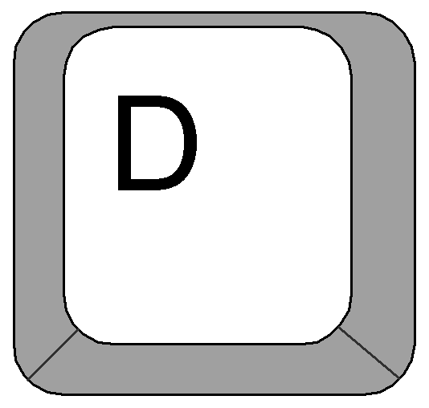
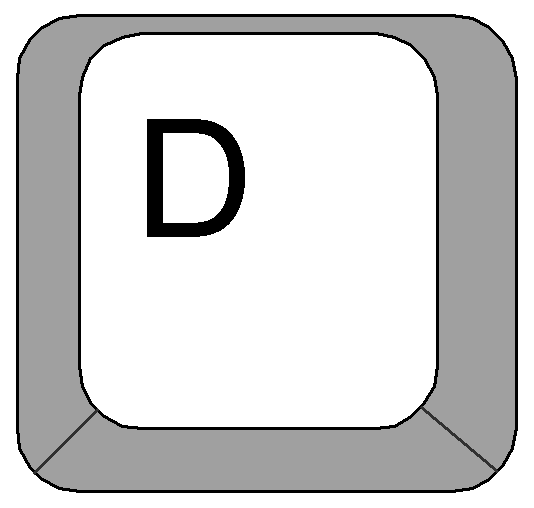

COM FUNCIONA?
Cada cop que un dels dos adversaris, que controlen un dels rectangles enfrontats, deixa passar la bola, el seu oponent guanya un punt. Posteriorment es van crear moltes variants: Pong en 3D, noves versions que contenien algunes innovacions, encara que el joc bàsic continua sent el mateix.
Aqui teniu un video de demostració:
Video de demostració
PLAYER 1
El Player 1 serà el que esta al costat esquerr de les vostres pantalles, tindra els següents controls
- Per moure-se cap a la dreta utilitzara la tecla D del teclat.
- Per moure-se cap a l'esquerra utilitzara la tecla A<º del teclat.
 

Per acabar, heu de saber que el costat esquerr del marcador serà el vostre.
PLAYER 2
El Player 2 serà el que esta al costat dret de les vostres pantalles, trindra els següents controls:
- Per moure-se cap a la dreta utilitzara la flecha dreta del teclat
- Per moure-se cap a la esquerra utilitzara la flecha esquerra del teclat
Per acabar, heu de saber que el costat dret del marcador serà el vostre.